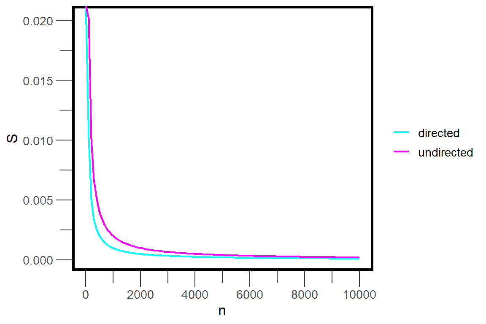
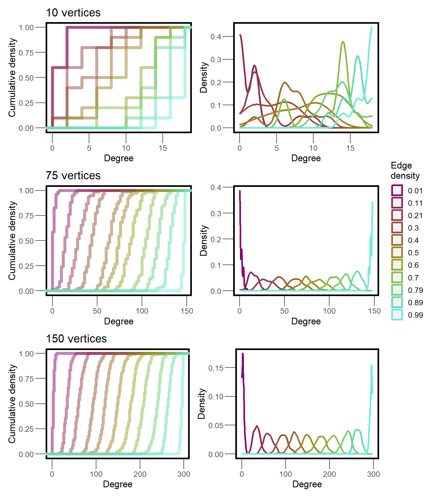
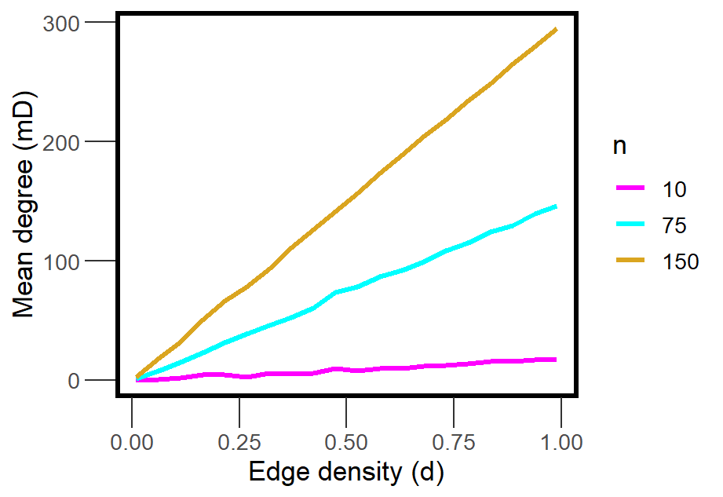
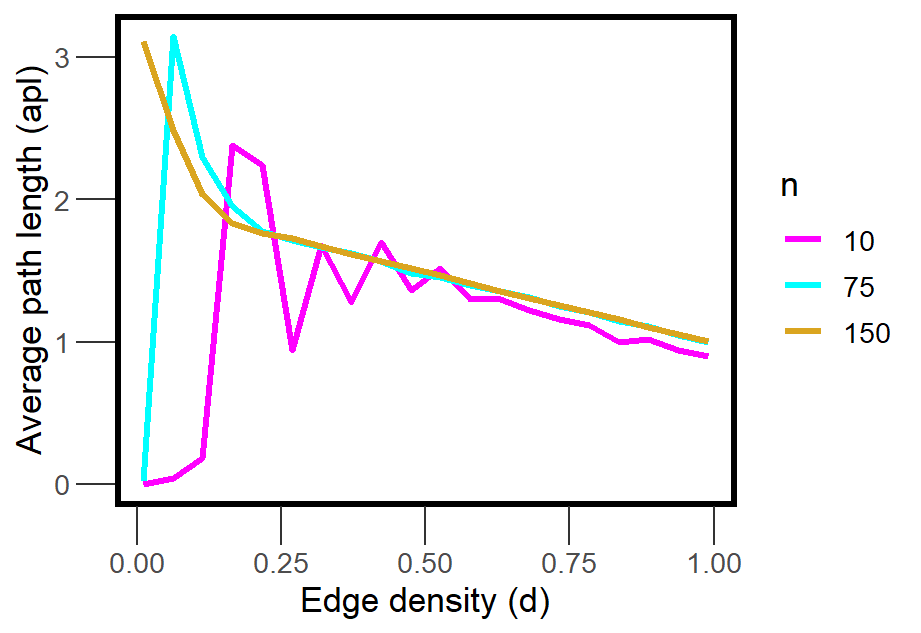

This post is also available on the Social Ecological Networks Group.
The size of a network is determined by the number of vertices and edges within it, and different size networks have different structural properties. This is obviously true if social processes like homophily, preferential attachment, or triadic closure influence network size, but it is also true for randomly generated networks.
How do properties like density, sparseness, degree distribution, or connectivity change as the number of vertices in a network increases? To find out, I set up a few computational experiments for directed and undirected networks.
Sparse networks
A graph is considered sparse if the number of edges, \(m\), is less the number of vertices, \(n\); a value given by \(m < O(n)\), the orthogonal group. As the number of vertices increases, the density at which a network is considered sparse decreases. Additionally, this negative relationship differs for undirected and directed networks, because the maximum edges in a directed graph is given by \(n(n-1)\) whereas in an undirected graph, it is \(n(n-1)/2\).
Generally speaking, the point at which any network becomes sparse (\(S\)) is the ratio between the orthogonal set and the maximum number of possible edges. For a directed network, this is given by:
\[S = \frac{O(n)}{n(n-1)}\]
And for an undirected network:
\[S = \frac{O(n)}{n(n-1)/2}\]
So if we vary \(n\) and plot the value of \(S\), we can see how this threshold changes for different size networks. Here is a function to do this:
sparsepoint <- function(n, directed=F) {
if ( directed == F ) { n / (n*(n-1)/2) }
else if ( directed == T ) { n / (n*(n-1)) }
else {
print('Must be TRUE or FALSE.')
}
}sparsepoint(100)[1] 0.02020202sparsepoint(100, directed = T)[1] 0.01010101Now we can create a sequence of \(n\) values and graph the results. Figure 1 shows what this function looks like as \(n\) increases from 1 to 10000. When a network is smaller than 1000 vertices, the sparsepoint is occurs between 0.5% and 2% density. The dropoff occurs more slowly for undirected networkss. Above 1000 vertices, the sparsepoint for both directed and undirected networks begins to converge on 0.01% density.
Warning: Using `size` aesthetic for lines was deprecated in ggplot2 3.4.0.
ℹ Please use `linewidth` instead.
Degree distribution
For a network of any size, as the edge density increases, the degree distribution is expected to become more uniform, with the mean degree starting to approximate \(n\). To see how degree distribution changes with edge density, we can calculate degree for each node across a variety of density levels. Here I do this for networks with 10, 75, and 150 vertices, each ranging in density from 0.01 to 0.99.
d <- seq(0.01,0.99, length.out=11)
l <- list()
for(i in seq_along(d)) {
l[[i]] <- network(10, directed = F, density = d[i])
m <- data.frame(lapply(l, degree))
}
colnames(m) <- paste0('Density',d)
head(m) Density0.01 Density0.108 Density0.206 Density0.304 Density0.402 Density0.5
1 0 0 2 6 8 12
2 0 0 4 8 8 10
3 0 0 4 10 8 6
4 0 2 4 8 10 10
5 0 0 6 8 8 10
6 0 0 2 6 6 6
Density0.598 Density0.696 Density0.794 Density0.892 Density0.99
1 10 16 16 14 18
2 10 12 18 16 18
3 4 12 18 14 18
4 10 16 14 16 18
5 14 10 14 14 12
6 12 10 18 16 18I do this for each network size and then plot the distributions to compare.

The degree distributions of networks that have only a couple hundred vertices or less can overlap quite a bit across different levels of edge density. Large networks have a much more precise degree distribution. This makes it clear why descriptive statistics that depend on density cannot easily be compared between different networks, unless the networks are large.
Average Path Length
The length of a path between two vertices is determined by the number of vertices that lie between them. A direct path between two vertices is equal to 1.
We observed that as \(m\) increases, mean degree approaches \(n\). We can expect that when mean degree is approximately \(n\), the average path length should be approximately 1.
The function below accepts a sequence of densities and a number of vertices, and returns the mean degree and average path length at each level of density.
l <- list()
apl <- c()
DegApl <- function(n, directed = F, d, seed=777) {
for(i in seq_along(d)) {
l[[i]] <- network(n, directed = directed,
density = d[i], seed=seed)
m <- data.frame(lapply(l, degree))
k <- lapply(l, geodist, inf.replace = 0, count.paths = F)
apl[i] <- mean(k[[i]]$gdist)
}
remove(l,k)
colnames(m) <- c(1:length(d))
mD <- apply(m, 2, mean)
return(cbind(apl,mD,n,d))
}Now we can explore relationships between these variables by running this function on networks with different sizes. Here we use a long sequence of densities to better approximate relationships.
We can expect that mean degree and density are positively correlated. But what is the shape of this relationship?

Average path length should also systematically vary with density, but it is unclear what the shape of this relationship will look like. For instance, at low density, many paths = 0 because many vertices are isolated. However, dense networks should have short paths, as most vertices are directly connected to each other.

At very low density (0.01), the average path length is essentially 0, but just a small increase in density leads to explosive increase in the average path length. This phenomenon is an example of explosive percolation, and it occurs because even randomly added edges have a chance of connecting isolated vertices to a large component.
This explosion happens even sooner for networks with a greater number of vertices. Exactly when does this percolation happen? At the sparsepoint (!) which we know varies systematically as a function of \(n\). Because the density at which a network goes from being sparse to not sparse decreases as a function of network size, we see explosive changes in average path length sooner and sooner as network size increases.
As we continue to increase density, the average path length decreases because the number of direct paths between vertices that are part of the largest component continues to increase, and this drives down the average path length. Eventually the average path length for networks of all sizes converges on 1.